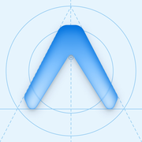

UnreelNo Shorts, no Reels, on iPhone
iPhone doesn't let apps look inside other apps, so Unreel works on youtube.com and instagram.com in Safari. The Shorts and Reels feeds are gone; search, long videos, posts, Stories and messages keep working.
Set it up (2 minutes)
On iOS 17 or earlier: Settings → Safari → Extensions.
Userscripts checks for new versions by itself. If you installed Unreel before version 1.1, install it once more to get updates.
Make it stick
The simplest way. While an app is installed, iPhone opens youtube.com and instagram.com links in the app, where nothing can remove the feeds. Without it, every link opens in Safari.
Like the pause card on Android: each time you open YouTube or Instagram from these icons, Unreel counts it and waits a few seconds before letting you in. Turn back and it counts that too.
- Open one of the buttons above in Safari.
- Tap ⋯ next to the address bar, then Share. (On older iPhones, the Share button is at the bottom.)
- Tap Add to Home Screen, turn Open as Web App off so it opens in Safari where Unreel works, and tap Add.
An automation sends you to the pause page whenever the YouTube or Instagram app opens. From there you can go to the website, where the feeds are gone.
- Open the Shortcuts app, tap Automation, then + (or New Automation).
- Choose App, select YouTube, keep Is Opened, and pick Run Immediately. Tap Next.
- Tap New Blank Automation, add the action Open URLs, and paste this link into it:
- Make a second automation for Instagram with this link:
Settings → Screen Time → App Limits → Add Limit, choose YouTube and Instagram, set 1 minute, and turn on Block at End of Limit. Ask a friend to set the Screen Time passcode.
Privacy
The script runs only on youtube.com and instagram.com, inside Safari, and sends nothing anywhere. The pause pages keep their counts in Safari on your phone. There are no accounts, ads or analytics.